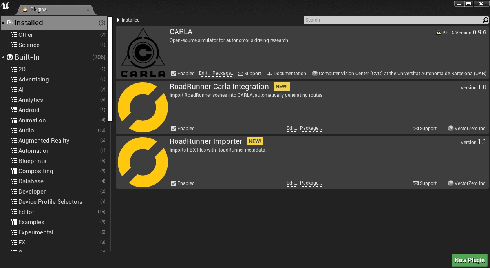
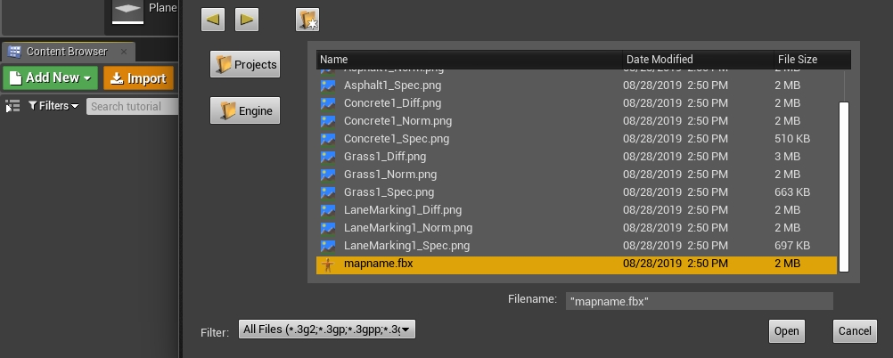
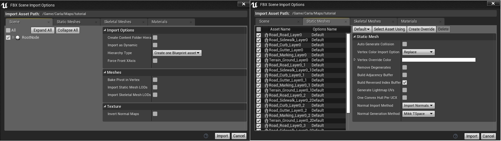
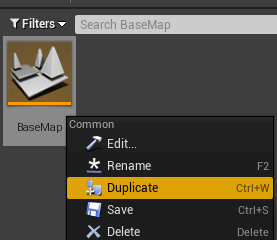
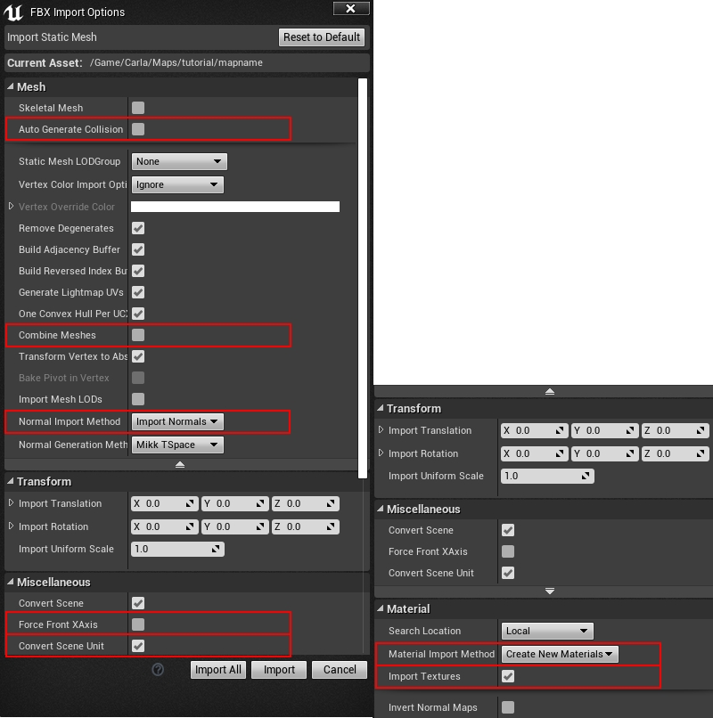
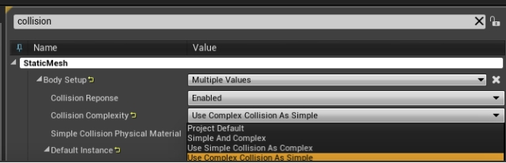

Alternative methods to import maps
This guide describes alternative methods to import maps into CARLA. These methods involve more manual steps than the processes described in the package and source import guides. First we will describe the RoadRuner plugin and then the manual import method.
RoadRunner plugin import
The RoadRunner software from MathWorks provides plugins for Unreal Engine to help ease the import process of maps into CARLA.
Plugin installation
1. The plugins are available for download from the MathWorks website. MathWorks also has a full tutorial, similar to this one, on how to import maps to CARLA using the plugins.
2. Extract the contents of the downloaded folder and move the folders RoadRunnerImporter, RoadRunnerCarlaIntegration and RoadRunnerMaterials to <carla>/Unreal/CarlaUE4/Plugins/.
3. Rebuild the plugin following the instructions below:
- On Windows.
- Right-click the
.uprojectfile in<carla>/Unreal/CarlaUE4and selectGenerate Visual Studio project files. - In the root folder of CARLA, run the command:
- Right-click the
make launch
- On Linux.
- Run the following command:
UE4_ROOT/GenerateProjectFiles.sh -project="carla/Unreal/CarlaUE4/CarlaUE4.uproject" -game -engine
4. In the Unreal Engine window, make sure the checkbox is selected for both plugins Edit > Plugins.

Import map
1. Import the <mapName>.fbx file to a new folder under /Content/Carla/Maps with the Import button.

2. Set Scene > Hierarchy Type to Create One Blueprint Asset (selected by default).
3. Set Static Meshes > Normal Import Method to Import Normals.

4. Click Import.
5. Save the current level File -> Save Current As... -> <mapname>.
The new map should now appear next to the others in the Unreal Engine Content Browser.

Note
The tags for semantic segmentation will be assigned according to the name of the asset. The asset will be moved to the corresponding folder in Content/Carla/PackageName/Static. To change these, move them manually after importing.
Manual import
This method of importing maps can be used with generic .fbx and .xodr files. If you are using RoadRunner, you should use the export method Firebox (.fbx), OpenDRIVE (.xodr) or Unreal (.fbx + .xml). Do not use the Carla Exporter option because you will run into compatibility issues with the .fbx file.
To import a map manually to Unreal Engine:
1. In your system's file explorer, copy the .xodr file to <carla-root>/Unreal/CarlaUE4/Content/Carla/Maps/OpenDrive.
2. Open the Unreal Engine editor by running make launch in the carla root directory. In the Content Browser of the editor, navigate to Content/Carla/Maps/BaseMap and duplicate the BaseMap. This will provide a blank map with the default sky and lighting objects.

3. Create a new folder with the name of your map package in the Content/Carla/Maps directory and save the duplicated map there with the same name as your .fbx and .xodr files.
4. In the Content Browser of the Unreal Engine editor, navigate back to Content/Carla/Maps. Right click in the grey area and select Import to /Game/Carla/Maps... under the heading Import Asset.

5. In the configuration window that pops up, make sure:
- These options are unchecked:
- Auto Generate Collision
- Combine Meshes
- Force Front xAxis
- In the following drop downs, the corresponding options are selected:
- Normal Import Method - Import Normals
- Material Import Method - Create New Materials
- These options are checked:
- Convert Scene Unit
- Import Textures

6. Click Import.
7. The meshes will appear in the Content Browser. Select the meshes and drag them into the scene.

8. Center the meshes at 0,0,0.

9. In the Content Browser, select all the meshes that need to have colliders. This refers to any meshes that will interact with pedestrians or vehicles. The colliders prevent them from falling into the abyss. Right-click the selected meshes and select Asset Actions > Bulk Edit via Property Matrix....

10. Search for collision in the search box.
11. Change Collision Complexity from Project Default to Use Complex Collision As Simple and close the window.

12. Confirm the collision setting has been applied correctly by pressing Alt + c. You will see a black web over the meshes.
13. To create the ground truth for the semantic segmentation sensor, move the static meshes to the corresponding Carla/Static/<segment> folder following the structure below:
Content
└── Carla
├── Blueprints
├── Config
├── Exported Maps
├── HDMaps
├── Maps
└── Static
├── Terrain
│ └── mapname
│ └── Static Meshes
│
├── Road
│ └── mapname
│ └── Static Meshes
│
├── RoadLines
| └── mapname
| └── Static Meshes
└── Sidewalks
└── mapname
└── Static Meshes
14. In the Modes panel, search for the Open Drive Actor and drag it into the scene.

15. In the Details panel, check Add Spawners and then click on the box beside Generate Routes. This will find the .xodr file with the same map name in the <carla-root>/Unreal/CarlaUE4/Content/Carla/Maps/OpenDrive directory and use it to generate a series of RoutePlanner and VehicleSpawnPoint actors.

Next steps
You will now be able to open your map in the Unreal Editor and run simulations. From here, you will be able to customize the map and generate the pedestrian navigation data. We recommend generating the pedestrian navigation after all customization has finished, so there is no chance of obstacles blocking the pedestrian paths.
CARLA provides several tools and guides to help with the customization of your maps:
- Implement sub-levels in your map.
- Add and configure traffic lights and signs.
- Add buildings with the procedural building tool.
- Customize the road with the road painter tool.
- Customize the weather
- Customize the landscape with serial meshes.
Once you have finished with the customization, you can generate the pedestrian navigation information.
It is recommended to use the automated processes for importing maps detailed in the guides for CARLA packages and CARLA source build, however the methods listed in this section can be used if required. If you encounter any issues with the alternative methods, feel free to post in the forum.